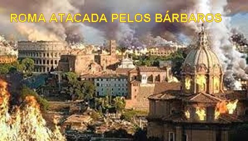
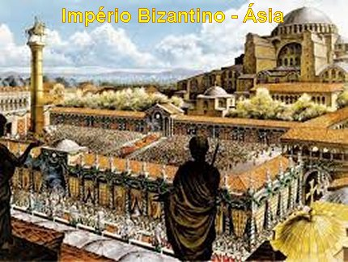
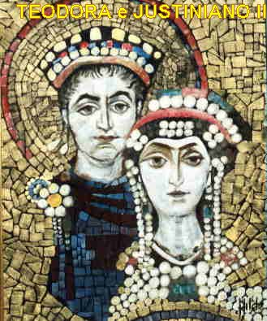
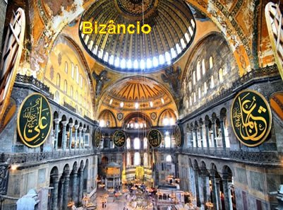
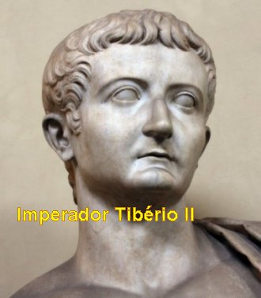
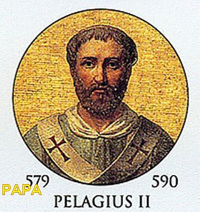

MISSÃO NO ORIENTE
CONSTANTINOPLA, A NOVA ROMA CRISTÃ
Como já foi mencionado, em face
das muitas invasões dos bárbaros na Península Italiana, onde estava à sede

O centro do Império no Oriente tornou-se uma metrópole brilhante e populosa, que reunia turistas e negociantes da Europa, da Ásia e de outras partes da Terra, porque era um ativo centro industrial que comercializava os seus produtos para o mundo inteiro. Assim, do mesmo modo, os variados produtos de todos os países também chegavam e abarrotavam as prateleiras das lojas locais, com sedas, tecidos, especiarias, drogas, pedras preciosas, peles, mel, cera, jóias, brocados de ouro, esculturas de marfim, ricos bordados, cerâmicas, mosaicos, joalheria, artefatos militares e muito mais.
As mais belas estátuas da antiguidade foram recolhidas de várias partes do imenso Império Romano para adornar as Praças públicas da “Nova Roma”, que se tornou uma verdadeira maravilha.

Todavia, essa grande riqueza, esse fausto exterior, abrigava um interior corrupto e decadente. O egoísmo e a sensualidade, destituída de sinceras convicções religiosas, se derramava na classe mais elevada da sociedade, fazendo desaparecer aquela velha aristocracia romana de berço e tradição. A frivolidade, os mexericos, o luxo e as histórias escandalosas, se misturavam, e se intrometiam nos negócios do Estado e da Igreja.
Gregório chegou a Constantinopla quinze anos depois da morte do Imperador Justiniano I, que foi o último Imperador Romano num Trono Bizantino. Justiniano sem dúvida foi um grande Imperador, com notáveis triunfos militares, mantendo uma política eclesiástica correta e com notável atividade arquitetural. Trabalhava firme para restaurar o Grande Império Romano, mantendo-o poderoso e unido. Mas se casou com Teodora, antiga bailarina e cortesã, vinte anos mais nova. Era uma mulher inteligente e, sobretudo, muito ambiciosa. É inegável que ela sempre ajudava o marido, mas, sua influência nem sempre era benéfica. Padre Fortescue comenta: “Se ela não desonrou Justiniano pela infidelidade, certamente o conduziu ao semi-monofisitismo”.
Como Imperador, Justiniano era
muito cioso de suas prerrogativas, controlava tudo, inclusive o Estado e a
Igreja. 
Por outro lado, sua esposa Teodora acreditava e defendia a “heresia monofisista”. Os hereges rejeitavam a Doutrina Católica de que JESUS CRISTO tem duas “Naturezas completas: Natureza Humana e Natureza Divina”. Ou seja, “ELE é verdadeiro DEUS e verdadeiro Homem”. Em consequência, os hereges também negavam que MARIA SANTÍSSIMA pudesse ser chamada “MÃE DE DEUS”(Theotókos , em grego). Assim os hereges erravam duas vezes. Sim, porque MARIA é a MÃE DE JESUS, e JESUS é a SEGUNDA PESSOA DA SANTÍSSIMA TRINDADE, e sendo assim, JESUS é DEUS; e, portanto, JESUS sendo FILHO DE MARIA, ELA, MARIA, é MÃE DE DEUS.
A heresia monofisista infestava a Síria e o Egito e se constituía numa constante fonte de distúrbio para o Império. O Imperador não querendo conflito religioso, permitiu este abominável pecado, o pecado incompreensível de não combater a heresia.
Com a morte de Justiniano, seu sobrinho de nome Justino II o sucedeu no trono, porque o filho único do Imperador Justiniano morreu ainda criança.
Entretanto, desde a morte de Justiniano a sociedade se tornou anárquica, porque o novo Imperador foi incapaz de governar com sabedoria e inteligência o Grande Império, não tinha pulso e nem aptidão administrativa.
E por isso, Justino II por conta da sua inexperiência, permaneceu pouco tempo como Imperador. Quando Gregório chegou a Constantinopla, o novo Imperador do Grande Império Romano era Tibério II.
NA CORTE ROMANA ASIÁTICA

A função principal da sua viagem era em nome do Papa Pelágio II pedir e conseguir ajuda do Imperador contra os lombardos que já sitiavam Roma. Todavia, em face do exército bizantino estar com toda atenção dirigida numa guerra contra os Sassânidas, este objetivo da missão praticamente fracassou. Mas ele, como Núncio Apostólico permaneceu morando em Constantinopla, mantendo contato permanente com a Itália. E também, trouxe para a “Nova Roma” diversos Monges do Mosteiro de Santo André, no sentido de continuar no Oriente com a mesma vivência monástica, com orações e estudos seguindo a Regra num amoroso exercício cristão.
Em 584, o Papa lhe escreveu
enfatizando as grandes dificuldades que Roma atravessava, agora ocupada e sob o

Toda a Itália se sentiu traída com a política adotada pelo Imperador Mauricio, que verdadeiramente cuidando dos seus interesses próprios, desviou sua atenção da Itália, não a protegendo das invasões dos bárbaros, principalmente dos terríveis lombardos, como era seu dever, como Imperador do Grande Império.
Foram seis anos de intenso trabalho na corte imperial que proporcionaram a Gregório Magno um útil contato com a cultura e a grandeza bizantina, mas também com a sinuosa e ambígua política dos seus soberanos. O cultivo das tendências heterodoxas: monofisismo e nestorianismo, que eram acolhidas por grande parte da corte, inclusive pela Imperatriz, foram rechaçados e combatidos sem tréguas por ele e os seus Monges, que com bastante inteligência sabia aliar aos seus argumentos teológicos uma fina habilidade diplomática.
Sempre acompanhado por alguns Monges do seu Mosteiro de Santo André, que vieram de Roma, por sua ordem, Gregório mantinha no belo palácio à beira do Bósforo, onde residiam os apocrisiários do Papa, a natural vida sacramental de um religioso, isto apesar das muitas ocupações que o envolvia. Ali todos rezavam, cantavam e estudavam as Sagradas Escrituras com amor, devoção e muito interesse, na inteira e perfeita observância da disciplina monástica.
Suas atividades em Constantinopla ficaram definidas, pela assistência espiritual ao Imperador e a sua família, assim como, as audiências oficiais e aos seus estudos, escritos e exercícios espirituais. Com este objetivo, na companhia dos Monges, passaram a viver como se estivessem num Mosteiro.
São Gregório permaneceu na cidade Imperial até fins do ano 585 ou início do ano 586, quando o Papa Pelágio II o chamou de volta. Ele retornou a Itália com os Monges, e trazendo também o Militar Esmaragdo, que era o novo Governador Militar da Itália com poder de vice-Rei, enviado pelo Imperador Mauricio.
GREGÓRIO EM ROMA

E sob a sua direção, o Mosteiro cresceu em dimensões e frequência, formando muitos Monges que se tornaram ilustres.
Nesta ocasião, visitando o Mercado em Roma, viu alguns escravos ingleses expostos, dos quais admirou a beleza, e por isso disse a célebre frase: “Non sunt angli, sed angeli” (Não são anglicanos, mas Anjos).
Segundo os hagiógrafos de São Gregório, em face desse encontro, ele se empenhou em converter os anglicanos, inclusive, conseguindo a necessária autorização do Papa. Entretanto, mal chegou a Londres teve de retornar, atendendo ao chamado do próprio Papa, que cancelou a autorização dada, em face de necessitar dos serviços dele em Roma. E ele humildemente aceitou, considerando que o momento de converter aquele povo não havia chegado.
MORTE DO PAPA PELÁGIO II
O ano 589 foi marcado por acontecimentos gravíssimos, com perdas, destruição e mortes em todo o território italiano. Chuvas torrenciais abateram-se sobre a Itália. Os campos ficaram alagados, perderam-se as colheitas e quase todos os rios transbordaram, destruindo pontes e inundando muitas vilas e cidades. Em Roma, o manso Tibre tornou-se uma torrente impetuosa. Saindo do seu leito atingiu um nível jamais visto, as águas devastaram e submergiram até os bairros menos elevados. O inverno e o novo ano chegaram, e a chuva não cessava de cair. A catástrofe atingiu então proporções apocalípticas, pois à destruição e à fome acrescentou-se também uma abominável epidemia de peste bubônica que se alastrou violenta e rapidamente foi dizimando a população. Roma agonizava, e muitos se perguntavam se não havia chegado o fim do mundo. Apenas se via os carroções com os empregados públicos recolhendo os cadáveres das vítimas, uma quantidade tão grande que eram enterrados numa vala única, fora dos muros da cidade.
A peste não poupou nem mesmo o Sumo Pontífice, que acabou morrendo em Fevereiro do ano 590. E por coincidência, na mesma ocasião também morreu Autari, rei dos lombardos, vítima da peste, o qual foi sucedido no trono por Agilulfo, que se casou com a viúva de Autari, Teolinda da Baviera, como era costume entre os bárbaros germânicos. Na sequência dos anos, Teolinda se revelará uma aliada influente de São Gregório, e inclusive, conseguirá converter Agilulfo, de crença ariana para Católica. A capital deste povo semi-selvagem que estava instalado dentro da Itália, era Pavia, região que passou a ser chamada de “Lombardia”, cujo nome permanece até hoje.